Richmond Peak
Richmond Peak is one of those days that everyone talks about. Some of the classic stories are about people limping into Ovando after getting over Richmond Peak. Getting to Holland Lake allowed me to be at the bottom of the climb first thing in the morning. I also wanted to get a good breakfast at the Holland Lake Lodge so I had a bit of a late start. After a brief wrong turn on the other side of the lake it took two hours to go the first 14 miles. The next 6 miles also took two hours.
Mornings are for going up
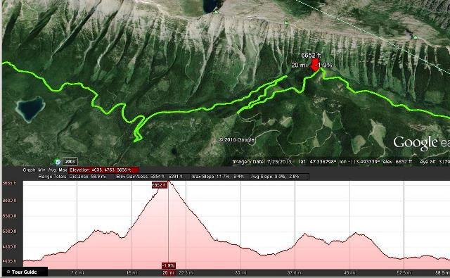
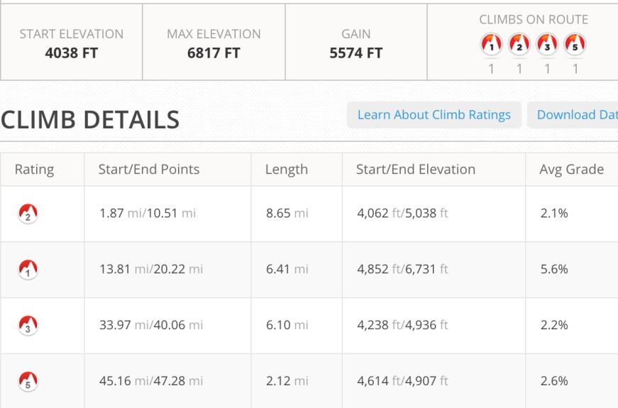
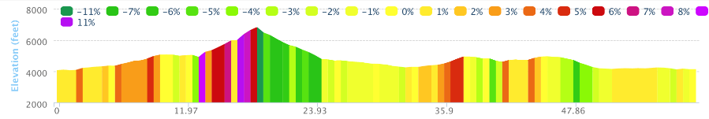
Started to get steep after about 13 miles as we circled the mountain and then circled back. Gained almost 2,800 feet.
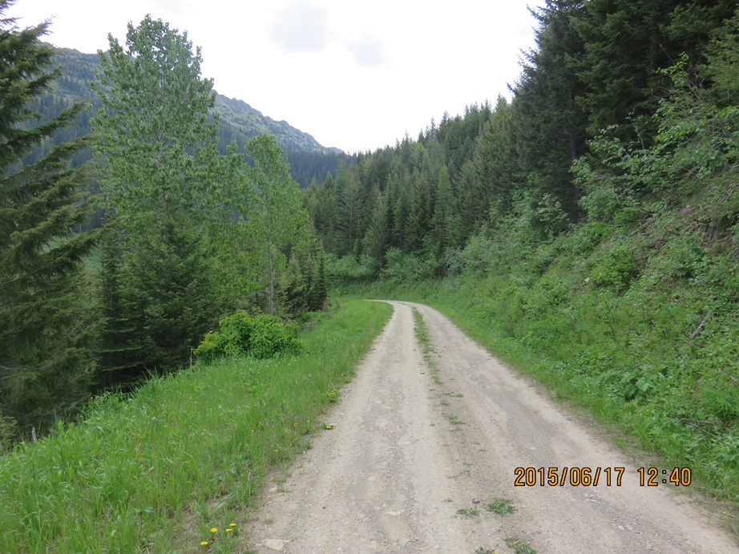
I really was going so slow it semed that this butterfly was keeping up with me
See!!! pic.twitter.com/lFsWUPix2q
— Jim OBrien (@jzob65) July 18,
2015Richmond Peak traverse
The map said you had real nice views looking north and south so when I finally got around to seeing the views to the south I was able to stop for a snack and take some pictures. I had only seen two riders during the day. A former winner, Billy Rice on a tandum with his daughter and a really big guy, Tim Glover, riding a fat bike. I had seen him the previous day at Holland Lake. He had inspired me since there were many times when I said "if he can do this I can do this". Billy Rice and his daughter almost ran over my bike when I had stopped for lunch. . Tim would save me later that day.


I felt like I had circled the mountain a couple of times and the switchbacks really did cover the same ground a few times.
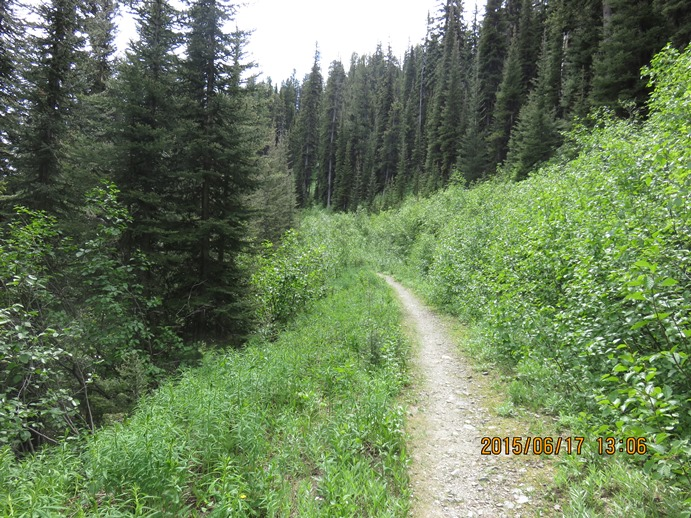
Once I reached the top I had a chance to ride the single track along the edge of the world. Many places had trees growing up to protect you from going over but sometimes the trail was two feet wide and then dropped 100s of feet just over the side.
Riding on the edge
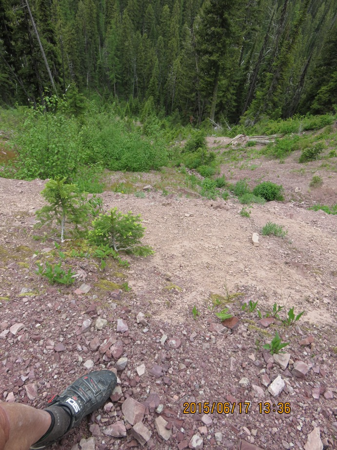

The view looking south from ...
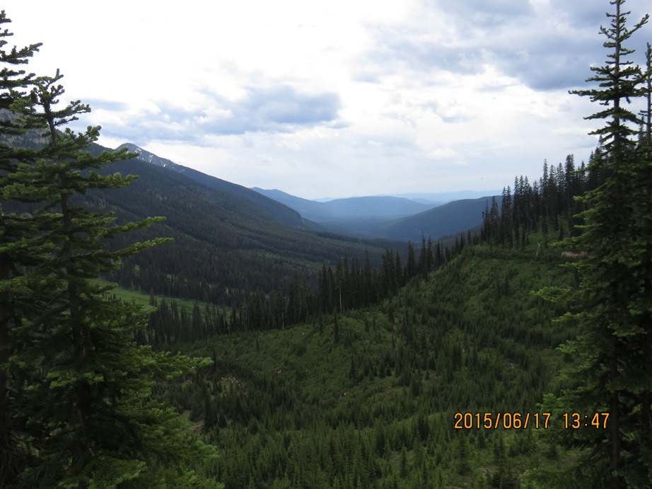
... my lunch spot
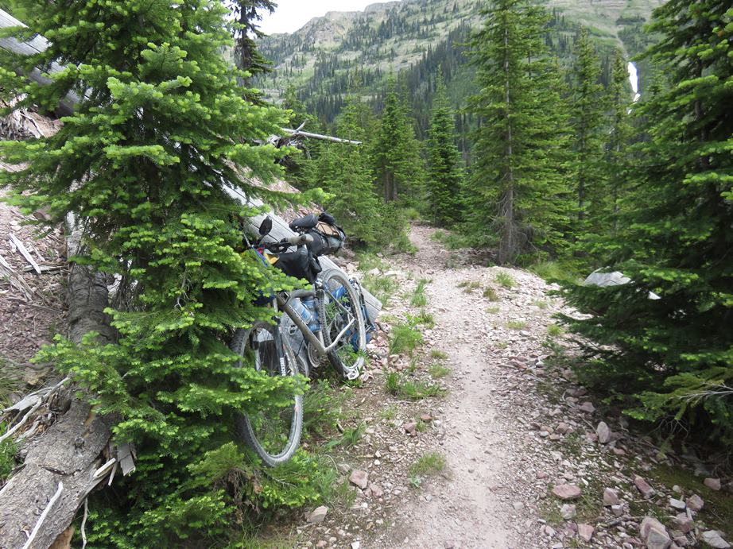
Not so many pictures from here to Ovando. The ride down from Richmond Peak was fast and rough. When I reached the bottom of the trail from Richmond I stopped to take a picture. Looking down I saw my camera case still attached via my two different points but the case was empty. So this pretty much ruined the rest of my afternoon. I had taken many cool photos of an interesting traverse and now those picutres were lost.

Ovando, MT
I rode into Ovando and Kathy at the Blackfoot Angler knew who I was and stopped to take the picture below.
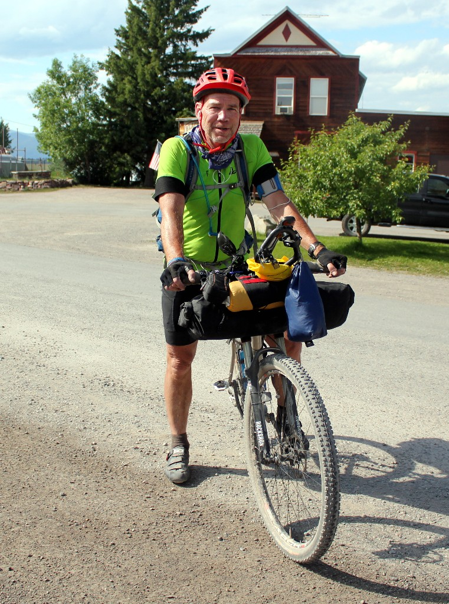
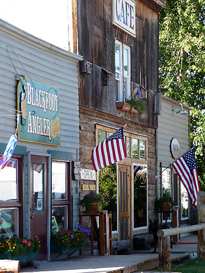
Blackfoot Angler
The town itself is very small but great for Tour riders. I picked up a number of supplies in the Blackfoot
Angler including two pairs of polorized sunglasses. I was sure I needed two since I had been without my
second pair of sunglasses
for two days having lost the first pair on Day 1 or 2.
It turns out the single pair of $20 sunglasses lasted to the end of the ride.
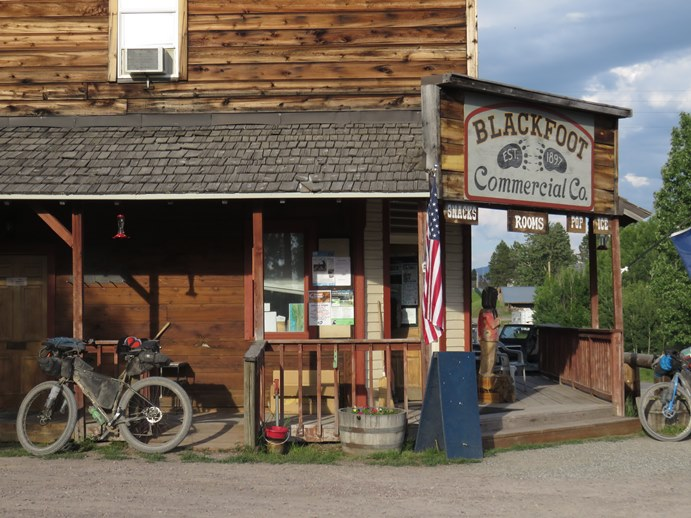
Blackfoot Inn & Commerce had rooms above the store and were great hosts. There were about 6 people staying there and a number of others were staying in the park across the street where there was an old jail and a teepee. They let us all park our bikes in the hotel living room and wash our clothes for free. They even stayed open late serving ice cream.
Trixi's Antler Saloon had a great surf and turf which I ate along with quite a few other items. Many riders in bar got a meal and rode on. My day was complete. When I got back to the hotel Tim Glover was riding into town. Unbelievably he had seem my camera as he was flying down from Richmond Peak and stopped, backtracked and picked it up. Trail Magic!!!!

June 18 - Ovando to Priest Pass
See full screen mapText by Jim O'Brien . Photographs by Jim O'BrienTD on Flickr.